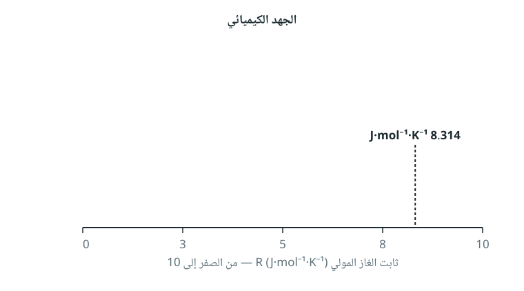

الجهد الكيميائي
Chemical potential
الجهد الكيميائي هو معدل تغيّر طاقة غيبس الحرة للنظام عند إضافة كمية صغيرة من مادة معيّنة مع ثبات الحرارة والضغط وباقي المواد، وهو القوة الدافعة لانتقال المادة والتفاعل.
الجهد الكيميائي μ_i للمكوّن i هو المشتقة الجزئية لطاقة غيبس الحرة بالنسبة إلى عدد مولاته عند ثبات الحرارة والضغط وباقي المكوّنات: μ_i = (∂G/∂n_i)_{T,p,n_j}. وهو يقيس كم تزيد طاقة النظام إذا أضفت مولاً واحداً من هذه المادة. المادة تنتقل تلقائياً من الموضع الأعلى جهداً كيميائياً إلى الأدنى، تماماً كما تنتقل الحرارة من الأسخن إلى الأبرد. وللغاز المثالي μ_i = μ_i° + R·T·ln(p_i/p°)، وللمحلول المثالي μ_i = μ_i° + R·T·ln(x_i). مثال: مذاب بتركيز أعلى في جانب من غشاء له جهد كيميائي أعلى، فينتقل إلى الجانب الأقل تركيزاً حتى يتساوى الجهدان.
كيف تعمل الظاهرة؟
الجهد الكيميائي هو الصياغة الدينامية الحرارية لما يدفع المادة إلى الحركة. ففي أي نظام متعدد الأطوار أو المواضع، تنتقل الجزيئات عشوائياً في الاتجاهين، لكن معدل الانتقال من الموضع ذي الجهد الأعلى أعلى قليلاً، فيغلب الانتقال الصافي نحو الجهد الأدنى. وهذا ليس قوة بالمعنى الميكانيكي بل فرق طاقة لكل مول: كل مول ينتقل يخفض طاقة غيبس الكلية. وعند التساوي يتوقف الانتقال الصافي ويصير النظام في توازن. ولهذا فإن كل ظواهر الانتقال — الانتشار، والأسموزية، والتبخّر، والذوبان — تُفسَّر بفرق جهد كيميائي واحد، لا بقوانين منفصلة لكل ظاهرة.
العلاقة بالأرقام
μ_i = μ_i° + R·T·ln(a_i)، حيث a_i النشاط. وللغاز المثالي a_i = p_i/p°، وللمحلول المثالي a_i = x_i. وشرط التوازن بين طورين: μ_i(طور 1) = μ_i(طور 2). والضغط الأسموزي: Π = −(R·T/V_m)·ln(a_w). مثال عددي: x_w = 0.9982 عند 298.15 K → RT·ln(x_w) = 2478.9 × (−0.0018018) = −4.466 J/mol؛ وV_m = 0.018015/997.00 = 1.807×10⁻⁵ m³/mol؛ فـΠ = 4.466/1.807×10⁻⁵ = 2.47×10⁵ Pa.
مفاهيم متقاربة
يُفرَّق بين الجهد الكيميائي والأنشطة: النشاط هو الحجة اللوغاريتمية، والجهد الكيميائي هو الناتج بالطاقة. ويُفرَّق بين الجهد الكيميائي والضغط: الضغط قوة لكل مساحة، والجهد الكيميائي طاقة لكل مول؛ ومع ذلك يولّد فرق الضغط فرق جهد كيميائي عبر حدّ V_m·Δp. ويُفرَّق بين الجهد الكيميائي والجهد الكهروكيميائي: في الأيونات المشحونة يُضاف حدّ z·F·φ، وهو ما يفسّر استقرار فرق جهد الغشاء العصبي عند قيم لا تتوازن عندها التراكيز. وأخيراً يُفرَّق بين الجهد الكيميائي الكلي والجزئي المولي: الأول للنظام كله، والثاني لكل مكوّن.
حدود التطبيق
التعريف يفترض نظاماً متجانساً في الحرارة والضغط، فلا يُطبَّق مباشرة على أنظمة فيها تدرّجات حرارة كبيرة بلا تصحيح. وفي المحاليل الحقيقية يلزم استعمال الأنشطة بدل التراكيز، وإلا كان الحساب خاطئاً عند التراكيز العالية أو في المحاليل الإلكتروليتية. ولا ينطبق على أنظمة صغيرة جداً بحيث لا يكون عدد الجزيئات كبيراً، حيث تتذبذب الكميات ولا تُعرَّف المشتقات بسلاسة. ولا يصف حركية الانتقال: يقول إلى أين يسير النظام، لا بأي سرعة، فسرعة الانتشار تحددها الانتشارية ومعاملات انتقال الكتلة.

| الكمية | القيمة | المصدر |
|---|---|---|
| كثافة الماء السائل عند 25 °م | 997.00 kg/m³ | [2] |
| فرق جهد الماء لمحلول سكروز 0.100 mol/L | −4.47 J/mol | [1] |
المصادر
- 1 CODATA Value: molar gas constant — NIST — CODATA 2022 recommended values (2024). physics.nist.gov/cgi-bin/cuu/Value?r · اطُّلع عليه 2026-11-21
- 2 NISTIR 5078 — Thermodynamic Properties of Water, 0 to 374 C and Pressures to 100 MPa (IAPWS-95 tabulation) — NIST — National Institute of Standards and Technology (1998). www.nist.gov/publications/thermodynamic-properties-water-temperatures-0-374-c-and-pressures-100-mpa · اطُّلع عليه 2026-11-21
- 3 The International System of Units (SI), 9th edition (2019) — BIPM — Bureau International des Poids et Mesures (2019). www.bipm.org/en/publications/si-brochure · اطُّلع عليه 2026-11-21
استشهد بهذا المصطلح
الصيغتان مبنيتان من بيانات الصفحة نفسها: العنوان والتاريخ ورابط النسخة المنشورة.
الجهد الكيميائي — Chemical potential. (2026). ديوان المعرفة — انفراد. https://infiradev.com/diwan/terms/term-chemical-potential.html
@misc{term-chemical-potential2026,
title = {الجهد الكيميائي},
titleaddon = {Chemical potential},
howpublished = {{ديوان المعرفة — انفراد} — مرجع علمي عربي},
year = {2026},
url = {https://infiradev.com/diwan/terms/term-chemical-potential.html},
urldate = {2026-11-26},
note = {مراجعة علمية: hermes (مراجعة معتمدة 2026-11-26)}
}
راجعه: hermes (مراجعة معتمدة 2026-11-26) · 2026-11-26 · آخر تحديث 2026-11-21